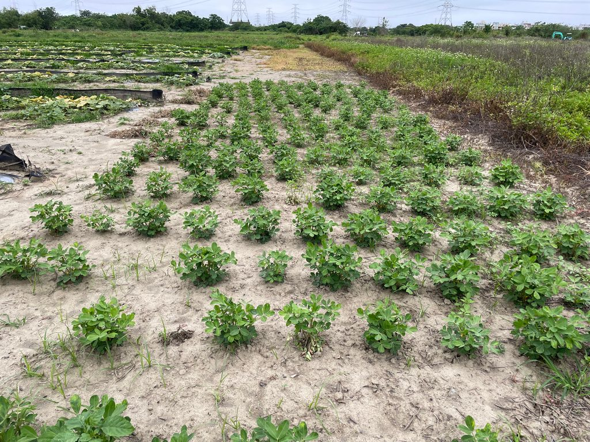
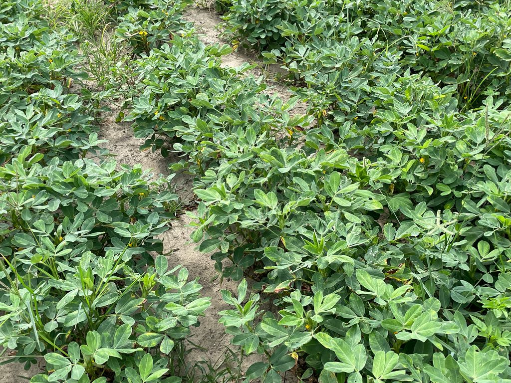
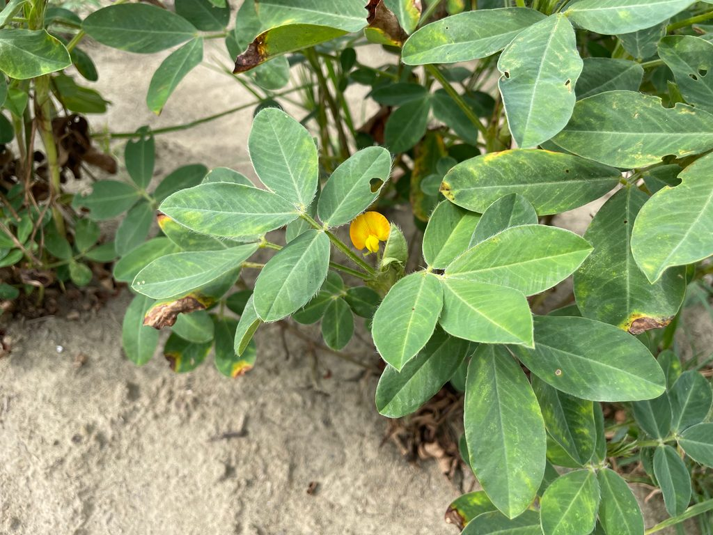
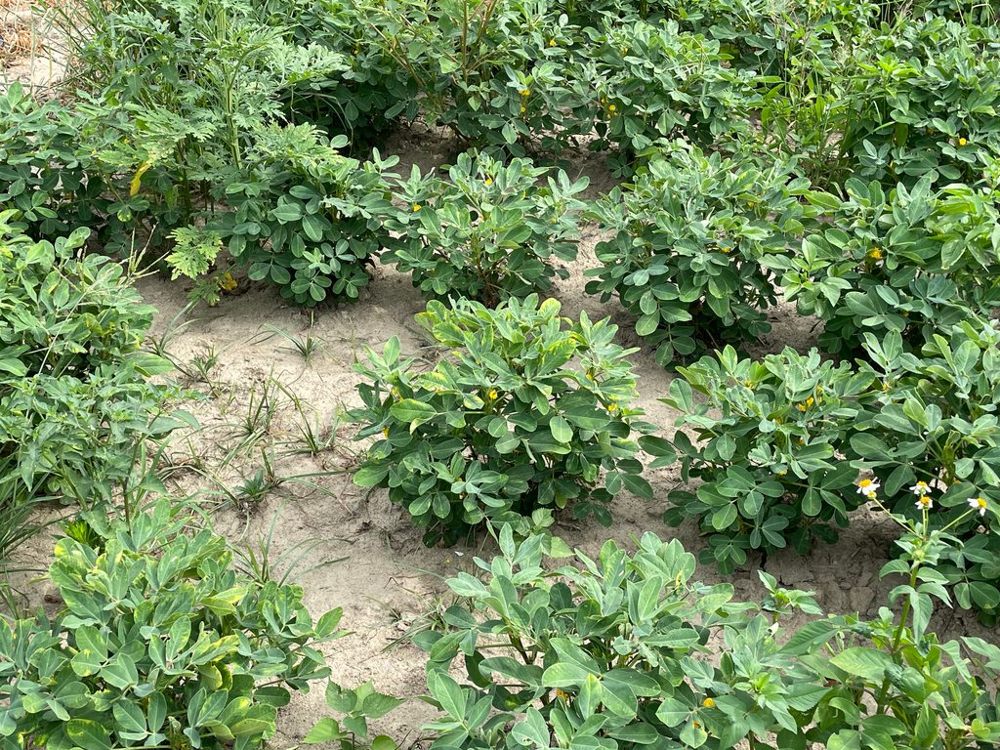
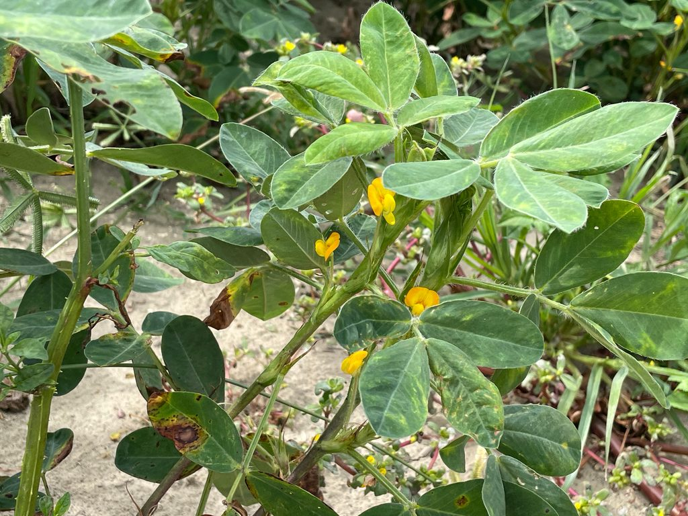

第一次書寫 · 清明 · 春雨
花生
跟爸爸下田種花生，卻在雨後的泥沼裡，把自己種成一隻拔不出腳的小豬。

前言
原本要撰寫的是關於大肚溪出海口附近的堤防，預計會用騎腳踏車的方式進行環境觀察。
結果在我要回家前的一個禮拜，媽媽就跟我說家裡的腳踏車壞掉了，就是我從國高中一路騎到現在的藍色腳踏車。在傷心之餘，我最先想到的是那我的國文寫作怎麼辦，因為整條堤防單趟要騎半個小時，走路的話雖然可以觀察到更多細節，但真的太累了、也會花很多時間。
於是後來打算用租借 YouBike 的方式來完成。雖然我沒有很喜歡在這邊騎 YouBike，不只是因為當地的站點離得超級遠，要先往回走十幾分鐘才有一站，下一站就要再騎二十分鐘左右；也因為騎 YouBike 會給我一種觀光客的感覺，這邊很少人在騎 YouBike，幾乎每戶人家都會有腳踏車，所以大家看到 YouBike 就會習慣性覺得是觀光客，會讓我覺得距離家鄉更遙遠了一點。
雖然前面思考了很久要怎麼處理腳踏車的問題，結果真的要回家的清明節當周連續幾天都下大雨，所以我直接不用考慮腳踏車，因為雨大到甚至不知道要不要出門。後來星期六中午的時候雨停了，爸爸就帶我一起回阿嬤家在大肚溪邊的田工作，所以就決定這次的書寫就以農田觀察為主題，紀錄跟爸爸一起在田裡工作的小故事——不過認真工作的應該只有他而已。
概述
我們家有一些地，其中幾塊是種稻米的水田，有一塊在大肚溪邊的菜田。平常比較少去水田，因為水稻通常只需要在要種的時候請插秧的人開著大機器來插秧，在要採收的時候請收割的人開著大機器來收割，平常偶爾去巡一下水稻有沒有長歪掉就好。
自從小時候在學校國文課本學過鴨間稻這個神奇的耕作方式之後，我每次回阿嬤家就會問爸爸什麼時候要在田裡面養鴨鴨。為了要說服他這個不是一件很麻煩的事情，我還很認真跟他說明養鴨子不僅很可愛還可以吃蟲子跟撒天然肥料，但他每次都拒絕我，所以我們家的水稻田目前還沒有鴨子進駐，好可惜。
我們平常最常去的是種菜的菜田，因為在大肚溪旁邊，所以我們都叫它過溪。過溪充滿了我小時候的各種回憶，我們家每個禮拜都會回阿嬤家，所以我跟哥哥小時候都會在田裡面玩，像是亂拔菜、挖泥巴坑跟捏泥巴，稍微長大一點之後就會幫忙澆水、挖地瓜跟玩泥巴。

從小到大看過田裡面出現非常多不同種植物，以前的固定來賓是夏天的西瓜跟冬天的南瓜，還有其他地瓜葉、筍子、絲瓜、小番茄；現在長大來台北讀書，每次回去看到的都不一樣，可能上個月回去看到的是南瓜，下個月回去就換成黑豆長出來，現在甚至還有桑葚、無花果跟哈密瓜，蓄水池裡面還養了吳郭魚。
每次回家都像是在開盲盒。
大概在高中以後，因為讀書壓力比較大，加上爸爸可能怕我在田裡搗蛋，所以回阿嬤家的時候會一起把腳踏車載回去，我巡視完作物之後就會從田裡出發騎上堤防，一路沿著大肚溪騎到出海口，也就是台中火力發電廠附近。這段路對我來說是一段重要的休息時間，平常在學校或在家裡的時候即便不想要想到讀書或報告的事情，卻還是會受到環境的影響；不過在騎車的這段時間裡，即便我有很多煩惱，因為田邊跟海邊真的什麼都沒有，只有長得幾乎一模一樣的田埂小路跟小房子。
所以我大概騎了五到十分鐘之後，就只記得自己在騎腳踏車了。
每次回去的時間跟日期都不太一樣，會看到的潮汐、路人、田的樣子都不一樣，季節不同的話風吹過來的味道也會不一樣，所以即便是一條有點無聊的路，搭配上一點一點的細節變化，也可以讓這趟路程充滿小小的驚喜。
種花生與沼澤
雖然我滿心期待想回家騎腳踏車，不過下大雨也是沒辦法。我們選在中午雨停的時候去了一趟田裡，我原本以為這次只有要回去看看就要再回家，結果爸爸說要來種花生，於是他就拎著一袋花生跟我走進了田裡。
平常的田，單行從頭走到底大概要三十秒，雖然有點遠但也還可以接受的距離。不過今天不一樣，因為早上下大雨，我們家的田的土質是沙土，所以田裡面的小路現在是大水坑。我穿的鞋子是洞洞鞋，所以爸爸帶我從旁邊的樹林繞過去，雖然走起來比較平穩，不過我不太喜歡一直被樹枝戳到，也不喜歡樹林裡面的好多小蚊子飛蟲。

總之我們是穿越到了田的後面，有一塊寬廣的地，正是我們要開種的地方。我們總共有四樣工具，兩把小鋤頭、一條細水管跟一包花生，爸爸用細長的硬水管當成對齊的工具，用小鋤頭沿著水管的直線，每隔一個鋤頭的距離挖一個洞，撒下兩顆花生，再把洞填起來換下一個洞，一條種好之後就把水管往旁邊移、開始種下一條。
雖然聽起來蠻簡單的，實際做起來也蠻簡單的，但我大概種完兩條就覺得好累，因為要一直蹲下站起來，所以腰跟小腿會比較痠。我剛開始種的時候速度很慢，因為我還沒掌握到技巧，我就看著爸爸用兩倍的速度一直超車，我才發現其實我可以把花生袋子放在地上、用左手抓一把花生就好。
我開始用手抓花生之後就開始放飛模式了，因為我的手比較小，又想要抓滿滿的花生，所以要稍微張開手的時候就會掉出不只兩顆，一開始還想說要撿起來，後來想想覺得反正花生小小的又那麼多顆，那好像多一顆也沒關係，導致後來有些坑有三顆、四顆，最多還有五顆，希望長出來的時候不會漏餡害我被罵。
正當我種到一半、要邁出下一步的時候，「噗嘰」一聲，我發現我的腳拔不出來了。
「噗嘰」一聲，我發現我的腳拔不出來了。
我焦急地大叫一聲，我爸回頭就發現有一隻小豬卡在泥巴坑裡面了，他就很冷靜地跟我說把腳拔出來，但我越用力、我的腳就陷得越下去。我原本想說另一隻腳換個比較可以施力的地方，結果又「噗嘰」一聲，兩隻腳都卡在裡面了。在一個動彈不得的情況下，我只能暫時放棄我的鞋子，先拯救我潔白的左腳，再拯救我布滿泥巴的右腳，最後再把我的兩隻鞋子從陷下去的泥巴地板裡面挖出來。
脫離泥巴之後，我看著爸爸始終都高於水平面的雙腳，就不甘心地繼續像爬山一樣每踩一個地方就地層下陷再回來。我問爸爸為什麼他都不會陷下去，爸爸就說因為他見多識廣，言下之意就是我還太嫩了、要來多種幾次。
泥巴路
正當我以為我們要把整條路都種完的時候，爸爸就說差不多可以了，於是我們就準備收工、返回休息處。我的手上還拿著上一條路沒撒完的花生，爸爸就說可以放回袋子、回家炒一炒就可以繼續吃了，我才發現原來這一袋花生種子跟平常吃的花生一模一樣，所以我剛剛多丟了幾顆花生在土裡，就是少吃了幾顆。
因為我剛剛走過來的時候不喜歡樹林裡有刺人的樹枝跟飛來飛去的蟲子，所以我打算走直線的田間小路回去，但因為下雨的關係，現在是一片一片的小水漥。這時候的我還想說剛剛都已經陷下去了，這次走回去頂多再下去幾次就沒事了，殊不知等一下的路途會有多災難。
回程的我，右手拎著我的兩隻鞋子，左手拿著裝花生的水瓢。這次要穿越的田是幾周前剛採收的南瓜田，田裡面還有殘留的一點點葉子跟雜草，但多半都被水淹過去了，看不太到水面下的情況。
剛開始我還可以自在地走在土地上，後來開始有水之後，我就「噗嘰」一聲陷下去，這邊還是可以預料的下陷，再走一段路之後就正式進入水域區。非常突然地「咻」一聲，原本只到小腿下方的泥巴，一下子就淹到膝蓋下方，我出發前千辛萬苦拉起來的褲管差一點點就要沾到泥巴了。這時候每走一步都是煎熬，不僅因為沒有施力點、很難把腳拔出來，也因為我的手拿著堆滿泥巴的鞋子，超級擔心褲子會沾到泥巴或沒有站穩直接跌倒。
雖然有點痛苦，不過在光腳走泥巴的過程中，可以感受到泥巴層裡面的生態，上層會比較混濁、有不同的漂浮物，後來陷下去的下層相對光滑清爽，只是偶爾會突然有樹枝出現在腳下，有點擔心不小心會踩到奇怪的物體。在前半段的路程我有看到螞蟻的出現，平常應該也還會有其他蟲蟲，很多都是叫不太出來名字的田間小生物，看得到的時候我會避開，但泥巴裡面就沒辦法了。

最後我還是堅強走完了最後一段路，原本三十秒的路程硬生生走了應該有五分鐘。踩泥巴的觸感跟之前去原住民部落體驗插秧的感覺幾乎一模一樣，我說服自己繼續走完的方法是聽說敷泥巴對皮膚很好，所以我是在用天然的方式保養我的雙腳，但不得不說感覺真的有變比較光滑，不過我短期內應該也不想再碰到泥巴了。

一個禮拜後的現在，我跟爸爸種的花生已經發芽了，期待下次回家的時候可以分得出來哪一棵是被我撒了五顆種子的幸運花生。